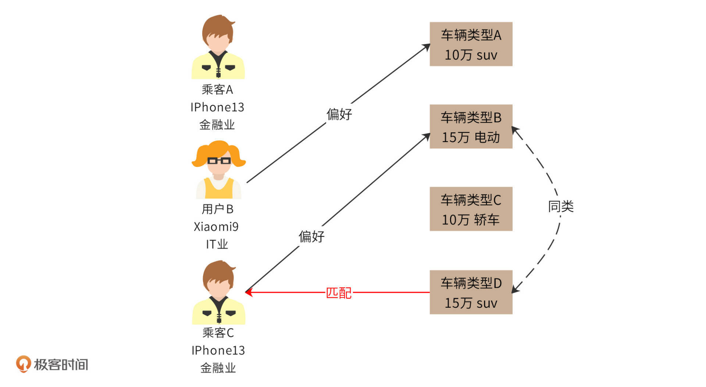

- 00 开篇词 “附身”大厂架构师，身临其境设计高并发系统.md
- 01 软件建模与文档：架构师怎样绘制系统架构蓝图？.md
- 02 高并发架构设计方法：面对高并发，怎么对症下药？.md
- 03 短 URL 生成器设计：百亿短 URL 怎样做到无冲突？.md
- 04 网页爬虫设计：如何下载千亿级网页？.md
- 05 网盘系统设计：万亿 GB 网盘如何实现秒传与限速？.md
- 06 短视频系统设计：如何支持三千万用户同时在线看视频？.md
- 07 海量数据处理技术回顾：为什么分布式会遇到 CAP 难题？.md
- 08 秒杀系统设计：你的系统可以应对万人抢购盛况吗？.md
- 09 交友系统设计：哪种地理空间邻近算法更快？.md
- 10 搜索引擎设计：信息搜索怎么避免大海捞针？.md
- 11 反应式编程框架设计：如何使方法调用无阻塞等待？.md
- 12 高性能架构的三板斧：分析系统性能问题从哪里入手？.md
- 13 微博系统设计：怎么应对热点事件的突发访问压力？.md
- 14 百科应用系统设计：机房被火烧了系统还能访问吗？.md
- 15 限流器设计：如何避免超预期的高并发压力压垮系统？.md
- 16 高可用架构的十种武器：怎么度量系统的可用性？.md
- 17 Web 应用防火墙：怎样拦截恶意用户的非法请求？.md
- 18 加解密服务平台：如何让敏感数据存储与传输更安全？.md
- 19 许可型区块链重构：无中心的区块链怎么做到可信任？.md
- 20 网约车系统设计：怎样设计一个日赚 5 亿的网约车系统？.md
- 21 网约车系统重构：如何用 DDD 重构网约车系统设计？.md
- 22 大数据平台设计：如何用数据为用户创造价值？.md
- 结束语 一个架构师的一天.md
22 大数据平台设计：如何用数据为用户创造价值？
特别说明：本文相关技术仅用于技术展示，具体实践中，数据收集和算法应用需要遵循国家个人信息保护法与信息安全法等有关法律制度。
你好，我是李智慧。
现在，业界普遍认为互联网创新已经进入下半场，依靠技术创新或者商业模式创新取得爆发性发展的机会越来越少。于是大家把目光转向精细化运营，主要手段就是依靠大数据技术，挖掘每个用户独特的商业价值，提供更具个性化的服务，以此来提升服务水平和营收能力，最终获得更强的市场竞争能力。
Udi大数据平台的主要目标是根据用户的不同喜好，为其分配不同的车型，一方面改善用户体验，另一方面也增加平台营收。此外，如何为用户推荐最优的上车点和下车点，如何分析订单和营收波动，如何发现潜在的高风险用户等等，也需要依赖大数据平台。
大数据技术不同于我们前面设计的高并发案例，高并发案例虽然也要处理海量用户的请求，但是每个用户请求都是独立的，计算与存储也是每个用户独立进行的。而大数据技术则要将这些海量的用户数据进行关联计算，因此，适用于高并发架构的各种分布式技术并不能解决大数据的问题。
Udi大数据平台设计
根据Udi大数据应用场景的需求，需要将手机App端数据、数据库订单和用户数据、操作日志数据、网络爬虫爬取的竞争对手数据统一存储到大数据平台，并支持数据分析师、算法工程师提交各种SQL语句、机器学习算法进行大数据计算，并将计算结果存储或返回。Udi大数据平台架构如下图：

大数据采集与导入
Udi大数据平台整体可分为三个部分，第一个部分是大数据采集与导入。这一部分又可以分为4小个部分，App端数据采集、系统日志导入、数据库导入、爬虫数据导入。
App端除了业务功能模块，还需要包含几个数据埋点上报模块。App启动的时候，应用启动上报模块会收集用户手机信息，比如手机型号、系统版本、手机上安装的应用列表等数据；App运行期间，也会通过定时数据上报模块，每5秒上报一次数据，主要是用户当前地理位置数据；用户点击操作的时候，一方面会发送请求到Udi后端应用系统，一方面也会通过用户操作上报模块将请求数据以及其他一些更详细的参数发送给后端的应用上报服务器。
后端的应用上报服务器收到前端采集的数据后，发送给消息队列，SparkStreamin从消息队列中消费消息，对数据进行清洗、格式化等ETL处理，并将数据写入到HDFS存储中。
Udi后端应用系统在处理用户请求的过程中，会产生大量日志和数据，这些存储在日志系统和MySQL数据库中的数据也需要导入到大数据平台。Flume日志收集系统会将Udi后端分布式集群中的日志收集起来，发送给SparkStreaming进行ETL处理，最后写入到HDFS中。而MySQL的数据则通过Sqoop数据同步系统直接导入到HDFS中。
除了以上这些Udi系统自己产生的数据，为了更好地应对市场竞争，Udi还会通过网络爬虫从竞争对手的系统中爬取数据。需要注意的是，这里的爬虫不同于[04讲]中的爬虫，因为竞争对手不可能将订单预估价等敏感数据公开。因此，爬虫需要模拟成普通用户爬取数据，这些爬来的数据也会存储在HDFS中，供数据分析师和产品经理在优化定价策略时分析使用。
大数据计算
Udi大数据平台的第二个部分是大数据计算。写入到HDFS中的数据，一方面供数据分析师进行统计分析，一方面供算法工程师进行机器学习。
数据分析师会通过两种方式分析数据。一种是通过交互命令进行即时查询，通常是一些较为简单的SQL。分析师提交SQL后，在一个准实时、可接受的时间内返回查询结果，这个功能是通过Impala完成的。另外一种是定时SQL统计分析，通常是一些报表类统计，这些SQL一般比较复杂，需要关联多张表进行查询，耗时较长，通过Hive完成，每天夜间服务器空闲的时候定时执行。
算法工程师则开发各种Spark程序，基于HDFS中的数据，进行各种机器学习。
以上这些大数据计算组件，Hive、Spark、SparkStreaming、Impala都部署在同一个大数据集群中，通过Yarn进行资源管理和调度执行。每台服务器既是HDFS的DataNode数据存储服务器，也是Yarn的NodeManager节点管理服务器，还是Impala的Impalad执行服务器。通过Yarn的调度执行，这些服务器上既可以执行SparkStreaming的ETL任务，也可以执行Spark机器学习任务，而执行Hive命令的时候，这些机器上运行的是MapReduce任务。
数据导出与应用
Udi大数据平台的第三个部分是数据导出与应用。Hive命令执行完成后，将结果数据写入到HDFS中，这样并不方便数据分析师或者管理人员查看报表数据。因此还需要用Sqoop将HDFS中的数据导出到MySQL中，然后通过数据分析查询控制台，以图表的方式查看数据。
而机器学习的计算结果则是一些学习模型或者画像数据，将这些数据推送给推荐引擎，由推荐引擎实时响应Udi系统的推荐请求。
大数据平台一方面是一个独立的系统，数据的存储和计算都在其内部完成。一方面又和应用系统有很多关联，数据需要来自应用系统，而计算的结果也需要给应用系统使用。上面的架构图中，属于大数据平台的组件我用蓝色标出，其他颜色代表非大数据平台组件或者系统。
Udi大数据派单引擎设计
我们在第20讲讨论了Udi派单引擎，这个派单引擎并没有考虑乘客和车型的匹配关系。根据Udi的运营策略，车辆新旧程度、车辆等级与舒适程度、司机服务水平会影响到订单的价格。派单成功时，系统会根据不同车辆情况预估不同的订单价格并发送给乘客，但是有些乘客会因为预估价格太高而取消订单，而有些乘客则会因为车辆等级太低而取消订单，还有些乘客则会在上车后因为车辆太旧而给出差评。
Udi需要利用大数据技术优化派单引擎，针对不同类别的乘客匹配尽可能合适的车辆。上面采集了乘客的手机型号及手机内安装应用列表，订单数据记录了乘客上下车地点，乘客评价以及订单取消原因记录了用户乘车偏好，车辆及司机数据记录了车辆级别和司机信息，这些数据最终都会同步到大数据平台。
我们将利用这些数据优化Udi派单引擎。根据用户画像、车辆画像、乘车偏好进行同类匹配。
基于乘客分类的匹配
根据乘客的注册信息、App端采集的乘客手机型号、手机内安装应用列表、常用上下车地点等，我们可以将乘客分类，然后根据同类乘客的乘车偏好，预测乘客的偏好并进行匹配。

比如根据数据分类，乘客A和乘客C是同类乘客，而乘客A偏好车辆类型B和D。乘客C叫车的时候，那么派单系统会优先给他派单车辆类型B和D。
基于车辆分类的匹配
事实上，我们可以直接根据车辆类型属性，对车辆类型进行再分类。比如通过机器学习统计分析，车辆类型B和D可以归为一类，那么如果乘客C偏好车辆类型B，那么我们可以认为车辆类型D也匹配他。

使用推荐引擎对派单系统进行优化，为乘客分配更合适的车辆，前提是需要对用户和车辆进行分类与画像，想要完成这部分工作，我们可以在大数据平台的Spark机器学习模块通过聚类分析、分类算法、协同过滤算法，以及Hive统计分析模块进行数据处理，将分类后的数据推送给派单引擎去使用。
派单引擎在原有的最小化等车时间基础上，对派单进行调整，使车辆和乘客偏好更匹配，改善用户体验，也增加了平台营收。
小结
网约车是一个格外依赖大数据进行用户体验优化的应用。比如用户上车点，在一个几千平方米的POI区域内，乘客方便等车，司机不违章的地点可能只有一两个，这一两个点又可能在任何地图上都没有标示。这就意味着，司机和乘客需要通过电话沟通很久才知道对方说的上车点在哪里，然后要么乘客徒步几百米走过来，要么司机绕一大圈去接，给司机和乘客都造成很多麻烦，平台也会因此流失很多用户。
对于这种问题，电子地图应用的厂商需要派测绘人员现场标注这些点。而对于网约车平台，由于不停在上传司机的位置信息，只需要根据乘客最后的上车点进行聚类分析，就会发现该区域大部分乘客最后都是在某个点上车，这个点就是最佳上车点。也就是说，只需要最初的一批乘客忍受麻烦，他们的行为数据就可以被网约车平台用于机器学习和数据挖掘，并被用于优化用户体验。
网约车平台像这样依赖大数据的地方还有很多。所以，网约车平台需要尽可能获取、存储用户和司机的各种行为与业务数据，并基于这些数据不断进行分析、挖掘，寻找潜在的商业机会和用户体验优化。对于一个数亿用户规模的网约车平台，这些数据的规模是非常庞大的，因此需要一个强大、灵活的大数据平台才能完成数据的存储与计算。
思考题
在你的工作中，是否有涉及到大数据和机器学习，它们带来了哪些价值？
© 2019 - 2023 Liangliang Lee. Powered by Vert.x and hexo-theme-book.